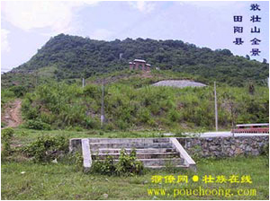
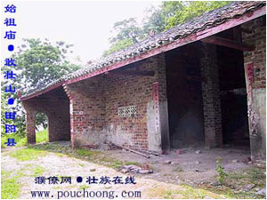
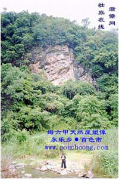

敬请布洛陀，敬请姆六甲，你们是王是仙，供奉坐中间；古时你们到最先，创造天地和人间，人们永远都纪念。
--摘自壮族创世史诗《布洛陀经诗》
寻根问祖是一个民族摆不脱的文化情结。
壮族是中国少数民族中人口最多的民族，壮族文化对中华文化乃至世界文化都有着重要的影响，东南亚许多壮泰语系的民族就一直认为他们的祖先是从中国的南方迁徙来的，泰国的专家学者为此曾多次到广西壮族地区“寻根”。我国的许多专家学者也对壮族的渊源问题做过大量的考究工作，但是壮族的“根”在何处仍然是一个令许多专家学者困惑的千古之谜。

重大突破：右江盆地是壮族古代文明发祥地
按壮族创世经诗《布洛陀经诗》记述，布洛陀是壮人的始祖，是创造天地万物的创世神。据专家考证，布洛陀可能是壮族先民中最强大的部落――鸟图腾部落的首领，因此鸟部落被壮族先民尊为始祖部落，布洛陀也被尊为神王。《布洛陀经诗》的流传区域是桂西和云贵高原东部，布洛陀的“祖籍”也应当在这一带。
古人类“祖籍”的认定必须有考古证据的支持，目前壮族先民的旧石器遗址广西各地已发现了100多处，其中百色盆地发现的最多，仅在百色、田阳、田东、平果四县（市）发现的旧石器地点就有80多处。但是哪些遗址是最早的先民遗址在科学鉴定上还未取得重大的突破。
2000年，美国权威的《科学》杂志以封面加评论的隆重方式公布了一项轰动世界的研究成果：百色盆地的古人类遗址的地质年代经中美学者用氩－氩法测定距今 80.3万年，是目前已知的世界上年代最早的古人类遗址之一。这一成果对于统治学术界达半个世纪之久的“人类起源非洲说”造成极大的冲击，它以准确的科学证据证明亚洲同样是人类的发源地。
这一研究成果也为壮族远祖的根在右江盆地提供了有力的佐证。许多学者受这一成果的启发，纷纷到百色盆地进行壮族起源的研究，于是一股"寻根"的热流在百色盆地涌动。

惊人发现：壮族始祖“家”在田阳
寻找壮族始祖布洛陀起源地的关键是找到布洛陀的祭祀庙，广西各地都发现过祭祀布洛陀的庙宇，但是只有历史最悠久祭祀仪式最隆重香火最盛的布洛陀庙才有可能是布洛陀的遗址。
今年6月，壮族著名文学艺术家、壮学学会顾问古笛先生到百色盆地考察采风，回到南宁后则兴奋地约见了南宁国际民歌艺术研究院院长彭洋和本报记者，向大家公布了他这次百色之行的惊人发现：壮族始祖布洛陀的遗址在田阳县百育镇六联村那贯屯的敢壮山。这一具有爆炸性的消息立刻引起了大家的浓厚兴趣。
古笛先生认定壮族始祖布洛陀遗址在田阳县的依据是：一、敢壮山上有被当地人称为"祖公庙"的布洛陀祭祀庙遗址。二、敢壮山的名字"敢壮"是壮人山洞的意思。三、“敢壮”歌圩是广西最大的歌圩，也是广西最大的祭祀布洛陀活动。四、田阳县有许多古人类遗址，百色盆地三大古人类遗址之一的赖奎遗址就在田阳。五、田阳古称增食县，是百色地区建置最早的县，壮族人文资源荟萃，明朝著名的抗倭女英雄瓦氏夫人就出在田阳。
古笛先生在谈话中旁征博引，用大量的事实说明壮族对中华文化的贡献和发现布洛陀遗址的重要意义。古笛先生是壮族学术界的权威学者和国务院特殊津贴专家，他对布洛陀遗址的认定在学术界举足轻重。为了更详尽地了解布洛陀遗址的情况，记者于7月4日开始了寻访布洛陀遗址的行程。
敢壮奇观：万把香火祭祖公
古笛先生所说的敢壮山离田阳县城8公里，位于田阳飞机场附近，它南面朝向右江河谷最大的盆地--右江盆地，是一座形似雄狮状的巍峨山峰。在周围面向右江的群山中，敢壮山是惟一的一座石山。敢壮山上多岩洞，山上山下都有泉，水源充足。敢壮山这一独特的地理环境在原始莽林密布的远古时代显然是人类穴居的理想场所。
敢壮山又名春晓岩，这个名字据说是明朝江西的地理先生郭子儒起的。郭子儒为皇帝寻找风水宝地来到田阳，发现敢壮山的奇异景观后赞叹不绝，称为宝地，他给敢壮山改名春晓岩，并题写对子：“旭日初升漫道霞光催燕舞，晓风微动满山花朵伴莺啼。”春晓岩林木葱郁，景色秀丽，是田阳县古代著名的八景之一。
记者沿着当年残存的古道石阶向位于山腰的祖公庙遗址攀登。山道上引人注目的是沿途密密麻麻的香火棍残枝，这些香火残枝新旧混杂，像一条蜿蜒曲折的长龙，从山下一直延伸到山上，可以想见朝拜的香火之盛。陪同考察的田阳县博物馆馆长黄明标告诉我们：每年农历二月十九，是传说中的布洛陀祖公的生日，从这一天开始到三月初九，周围百色、田东、德保、巴马、凤山、东兰、隆安、田林等十几个县的群众都络绎不绝地汇聚敢壮山，朝拜布洛陀祖公神庙，形成了万把香火敬祖公的壮观场面。朝拜的第一天，各村长老和师公自发举行隆重的祭祀仪式，吟颂布洛陀经诗，恭请祖公、母娘神灵上山入位。从这一天开始每天都有师公轮值念经，看守布洛陀的灵位。到了三月初七仪式结束，便开始举行歌圩活动。歌圩活动连续举行三天，参加的群众达四五万人，是广西最大也是最早的歌圩。
敢壮山的名胜古迹有母娘岩、祖公庙、望子岩，鸳鸯泉、圣水池、蝗虫洞、封洞岩等，这些名胜古迹全都和布洛陀有关。母娘岩传说是祖公布洛陀和母娘姆六甲居住的洞府，岩洞构造奇特，前洞空敞如宫殿，后洞叫通天岩，洞顶有一个天窗，以前天窗口有一条大树藤直垂而下，人可攀藤爬上山顶。祖公庙是布洛陀的香火庙，遗址在母娘岩东侧，原来的庙宇1958年被毁，周围竖立的上百块石碑也被挖去作修水利的石材。后来在原址上重建了两间简陋的房子，原庙的风貌如何已无法辨识。壮族珍贵的历史文物就这样毁于一旦，确实令人遗憾。鸳鸯泉在封洞岩旁边，泉水清幽，传说是布洛陀被一对情侣的痴情所感动而点化成的。圣水池传说是姆六甲的洗脸盆，是一眼小圆桌般大的泉水，深达两米，虽然位于山顶，池水却奇特地长年不干。
敢壮山是布洛陀的“祖居”，又有那么多的祖神“圣迹”，自然成为壮族万众敬仰朝拜的圣山。
口碑如林：布洛陀故事代代传
敢壮山是否是壮族始祖布洛陀的“故居”？这需要考古实物的进一步证明。但是当地流传的民间故事和诗歌在一定程度上可以看做历史的活化石，其中遗留有许多史前的信息，可以作为历史的佐证。
田阳是《布洛陀经诗》广泛流传的地区。20世纪80年代以来，广西文化部门在全区广泛开展征集《布洛陀经诗》古抄本工作，在征集到的28本古抄本中属于田阳县征集的就有14本，仅在玉凤镇玉凤村庭怀屯就征集到了5本。田阳县最早的一部《布洛陀经诗》古抄本于1986年2月民间文学三套普查时发现，据收藏者罗占贤介绍，这部手抄本传到他手上已有300年以上的历史。田阳显然是《布洛陀经诗》的原创地《布洛陀经诗》透露的布洛陀原址信息虽然较笼统，但诗中所说的“布洛陀的家在山洞”、“布洛陀的地在石山下”、“布洛陀的家在紫石山”等布洛陀原址的自然环境与敢壮山布洛陀遗址的环境相吻合。田阳县田州镇东江村离敢壮山3公里的一片田垌就叫做“洛陀垌”，特别值得注意是诗中有这么一句：“布洛陀的家在安东”，“安东”是地名，但是安东是指哪里一直无法确定。据田阳县博物馆馆长黄明标考证，田阳县县城古称安圩，“安东”就是在田阳县城的东面，这恰好就是敢壮山的方位。
在敢壮山当地的群众中至今还流传着许许多多关于布洛陀的故事。黄明标曾到山下的几个村子里调查，收集整理了一批关于布洛陀与敢壮山的民间传说。这些传说中有许多布洛陀的神话，说敢壮山是布洛陀的行李变的，右江是布洛陀掉落的锄头划出来的……但是剔除这些故事的神话部分，我们还是可以从中得到许多布洛陀在此生活的信息：布洛陀和么六甲居住在母娘岩，繁衍出许多子孙，这些子孙分散到各个地方生活，每年农历二月十九布洛陀的生日，这些子孙都赶回敢壮山给祖公拜寿，因为子孙人数太多，只能排队等待上山，等待中大家以歌询问对答，欢庆亲人相会，后来就形成了敢壮歌圩……这些民间传说和习俗，反映出了布洛陀的始祖地位和壮族先民祖宗崇拜的民族心理，对我们了解敢壮山的历史有很大帮助。

文化遗产：中华民族永远的财富
不管专家们对田阳和百色盆地的壮族始祖崇拜文化遗址最后如何认定，但是有一点可以肯定，这些遗址是我们中华民族珍贵的文化遗产，研究和开发这些文化遗产，对于提高我们的民族自信心，促进当地的两个文明建设的发展都具有重要的意义。
目前，一些专家学者对布洛陀遗址的发现给予了很高的评价。中央民族大学教授、壮学权威专家梁庭望认为，布洛陀始祖遗址提供了许多新的壮族古文化资料，它的认定是一件大好事，广西要做好这篇大文章，让大家都知道壮族悠久的文化之源。广西社会科学院历史研究所所长黄振南认为，田阳布洛陀遗址的祭祀活动是壮民族远古的一个记忆，具有很高的价值，不管学术界对此有何争论，但是它以后所产生的影响很可能会超出我们的想象。南宁国际民歌艺术研究院院长彭洋认为，布洛陀遗址的发现不亚于乐业天坑的发现，它对当地旅游业的发展将起巨大的推动作用，它的潜在价值怎么评估都不过分。
布洛陀遗址的保护和开发工作已引起了百色地区和田阳县领导的高度重视，他们已组织有关部门对布洛陀遗址进行了全面的考察，并着手开展保护和开发的规划工作。敢壮山将有望重现光彩，成为广西新的旅游热点。
成于2002.08.16
寻找壮民族的根 ——壮族始祖布洛陀原址寻访记
作者： 来源： 发布时间：2011-03-08
©sanayard.com 山那羊©民族文化记录网站 2011-2020